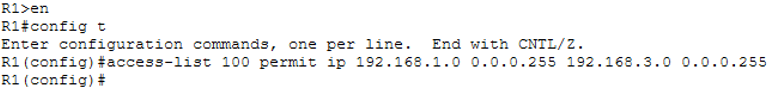
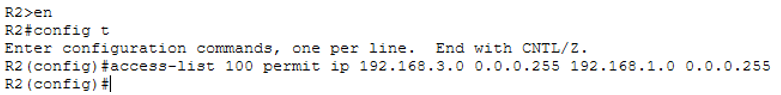
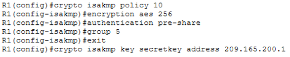
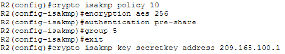
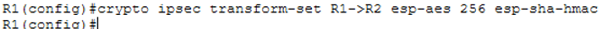
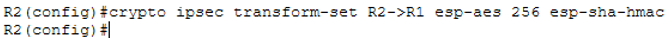
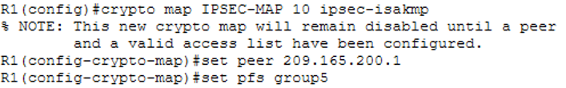
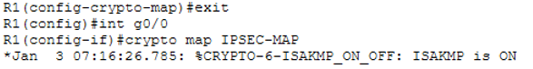
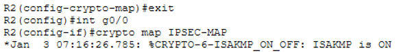

← Volver
← Volver

Implementación de IPSec VPN
La actividad permite comprender cómo se construye una red segura sobre infraestructura básica. Configurar direcciones, rutas estáticas y habilitar paquetes de seguridad es un ejercicio que acerca al estudiante a escenarios reales de conectividad protegida, donde la confidencialidad e integridad de los datos son esenciales.
En cada Router:
Listas de Control de Acceso (ACL): son conjuntos de reglas de seguridad configuradas en routers, switches o firewalls que gestionan el tráfico de red permitiendo o denegando el paso de datos basándose en direcciones IP, protocolos y puertos.
R1 (config): access-list 100 permit ip 192.168.1.0 0.0.0.255 192.168.3.0 0.0.0.255
R2 (config): access-list 100 permit ip 192.168.3.0 0.0.0.255 192.168.1.0 0.0.0.255
Cifra sólo encabezado.
R1(config)# crypto isakmp policy 10
R1(config-isakmp)# encryption aes 256
R1(config-isakmp)# authentication pre-share
R1(config-isakmp)# group 5
R1(config-isakmp)# exit
R1(config)# crypto isakmp key secretkey address 209.165.200.1
R2(config)# crypto isakmp policy 10
R2(config-isakmp)# encryption aes 256
R2(config-isakmp)# authentication pre-share
R2(config-isakmp)# group 5
R2(config-isakmp)# exit
R2(config)# crypto isakmp key secretkey address 209.165.100.1
Cifra encabezado y cuerpo del contenido
R1(config)#crypto ipsec transform-set R1->R2 esp-aes 256 esp-sha-hmac
R2(config)#crypto ipsec transform-set R2->R1 esp-aes 256 esp-sha-hmac
R1(config)#crypto map IPSEC-MAP 10 ipsec-isakmp
R1(config-crypto-map)#set peer 209.165.200.1
R1(config-crypto-map)#set pfs group5
R2(config)# crypto map IPSEC-MAP 10 ipsec-isakmp
R2(config-crypto-map)# set peer 209.165.100.1
R2(config-crypto-map)#set pfs group5
R2(config-crypto-map)#set security-association lifetime seconds 86400
R2(config-crypto-map)#set transform-set R2->R1
R2(config-crypto-map)#match address 100

R1(config-crypto-map)#exit
R1(config)#int g0/0
R1(config-if)#crypto map IPSEC-MAP
R2(config-crypto-map)#exit
R2(config)#int g0/0
R2(config-if)#crypto map IPSEC-MAP
Este tipo de práctica es fundamental porque enseña a integrar seguridad en la capa de red desde la configuración inicial. La topología con tres routers y dos switches refleja un entorno común en empresas latinoamericanas, donde se requiere interconectar sucursales o filiales de manera segura a través de Internet. La implementación de IPSec no solo protege la comunicación, sino que también fortalece la resiliencia de la infraestructura frente a ataques externos. En síntesis, la actividad fomenta una visión práctica de cómo la seguridad debe ser parte del diseño de red y no un añadido posterior.